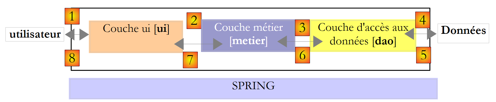
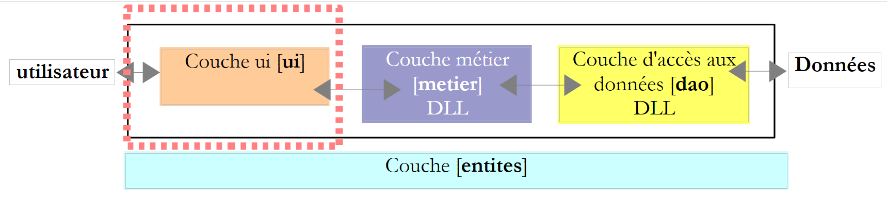
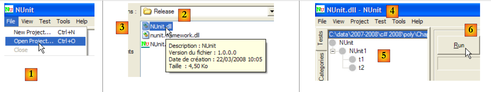
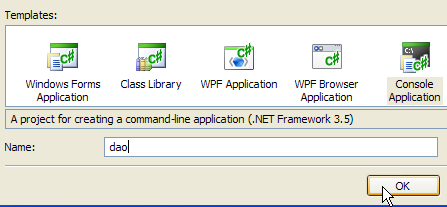
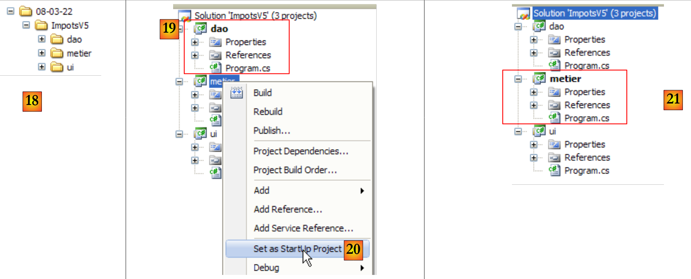
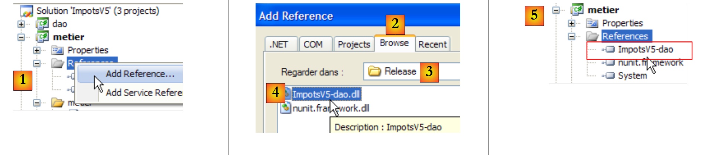
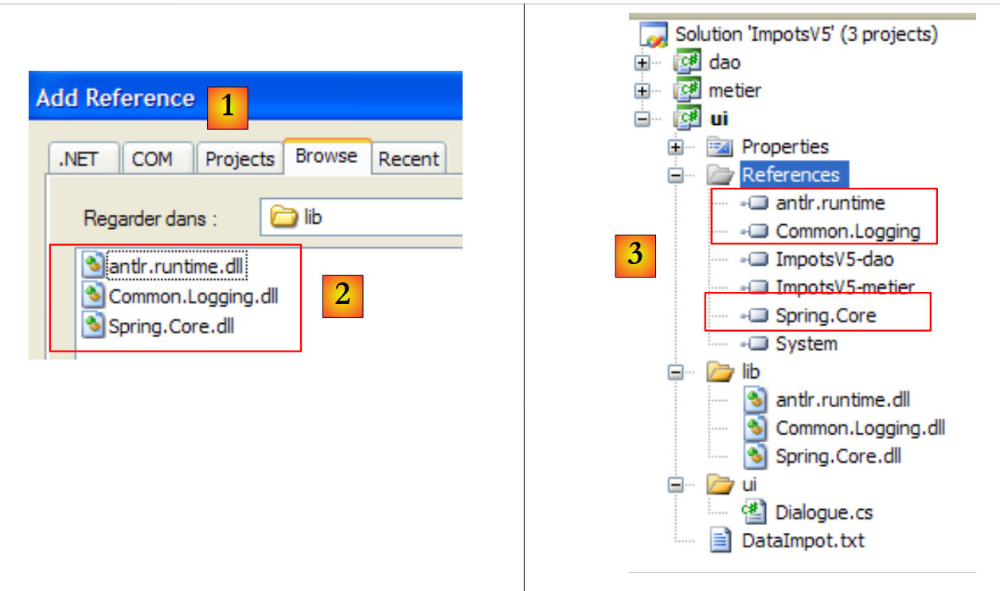

6. 3-Schichten-Architekturen
6.1. Introduction
Kommen wir noch einmal auf die neueste Version der Steuerberechnungsanwendung zurück:
using System;
namespace Chap3 {
class Program {
static void Main() {
// Interaktives Programm zur Steuerberechnung
// Der Benutzer gibt drei Daten über die Tastatur ein: verheiratet nbEnfants Gehalt
// Das Programm zeigt daraufhin die zu zahlende Steuer an
...
// Erstellung eines Objekts IImpot
IImpot impot = null;
try {
// Erstellung eines Objekts IImpot
impot = new FileImpot("DataImpotInvalide.txt");
} catch (FileImpotException e) {
// Fehleranzeige
...
// Programmbeendigung
Environment.Exit(1);
}
// Endlosschleife
while (true) {
// Die Parameter für die Steuerberechnung werden abgefragt
Console.Write("Paramètres du calcul de l'Impot au format : Marié (o/n) NbEnfants Salaire ou rien pour arrêter :");
string paramètres = Console.ReadLine().Trim();
...
// Die Parameter sind korrekt – die Steuer wird berechnet
Console.WriteLine("Impot=" + impot.calculer(marié == "o", nbEnfants, salaire) + " euros");
// Nächster Steuerzahler
}//while
}
}
}
Die bisherige Lösung umfasst klassische Programmiervorgänge:
- das Abrufen von Daten, die in Dateien, Datenbanken usw. gespeichert sind, Zeilen 12–21
- die Interaktion mit dem Benutzer, Zeilen 26 (Eingaben) und 29 (Anzeigen)
- die Verwendung eines geschäftsspezifischen Algorithmus, Zeile 29
Die Praxis hat gezeigt, dass die Trennung dieser verschiedenen Verarbeitungsschritte in separate Klassen die Wartbarkeit der Anwendungen verbessert. Die Architektur einer so strukturierten Anwendung sieht wie folgt aus:
 |
Diese Architektur wird als „Dreischichtenarchitektur“ bezeichnet, eine Übersetzung des englischen Begriffs „three-tier architecture“. Der Begriff „Dreischichtenarchitektur“ bezeichnet normalerweise eine Architektur, bei der sich jede Schicht auf einem anderen Rechner befindet. Befinden sich die Schichten auf demselben Rechner, wird die Architektur zu einer „Dreischichtenarchitektur“.
- Die Schicht [metier] enthält die Geschäftsregeln der Anwendung. Bei unserer Steuerberechnungsanwendung sind dies die Regeln, mit denen die Steuer eines Steuerpflichtigen berechnet wird. Diese Schicht benötigt Daten, um zu funktionieren:
- die Steuerklassen, deren Werte sich jedes Jahr ändern
- die Anzahl der Kinder, der Familienstand und das Jahreseinkommen des Steuerpflichtigen
Im obigen Schema können die Daten aus zwei Quellen stammen:
- die Datenzugriffsebene oder [dao] (DAO = Data Access Object) für Daten, die bereits in Dateien oder Datenbanken gespeichert sind. Dies könnte hier bei den Steuerklassen der Fall sein, wie es in der vorherigen Version der Anwendung der Fall war.
- die Benutzerschnittstellenebene oder [ui] (UI = User Interface) für Daten, die vom Benutzer eingegeben oder ihm angezeigt werden. Dies könnte hier bei der Anzahl der Kinder, dem Familienstand und dem Jahresgehalt des Steuerpflichtigen der Fall sein
- Allgemein gesagt kümmert sich die Schicht [dao] um den Zugriff auf persistente (Dateien, Datenbanken) oder nicht-persistente (Netzwerk, Sensoren, …) Daten.
- Die Schicht [ui] hingegen ist für die Interaktionen mit dem Benutzer zuständig, sofern ein solcher vorhanden ist.
- Die drei Schichten werden durch die Verwendung von Schnittstellen voneinander unabhängig gemacht.
Wir werden die bereits mehrfach untersuchte Anwendung [Impots] wieder aufgreifen, um ihr eine 3-Schichten-Architektur zu verleihen. Dazu werden wir die Schichten [ui, metier, dao] nacheinander untersuchen, beginnend mit der Schicht [dao], die sich um die persistenten Daten kümmert.
Zuvor müssen wir jedoch die Schnittstellen der verschiedenen Schichten der Anwendung [Impots] definieren.
6.2. Die Schnittstellen der Anwendung [Impots]
Zur Erinnerung: Eine Schnittstelle definiert eine Reihe von Methodensignaturen. Die Klassen, die die Schnittstelle implementieren, füllen diese Methoden mit Inhalt.
Kehren wir zur 3-Schichten-Architektur unserer Anwendung zurück:
 |
Bei dieser Art von Architektur geht oft der Benutzer die Initiative ein. Er stellt eine Anfrage in [1] und erhält eine Antwort in [8]. Dies wird als Anfrage-Antwort-Zyklus bezeichnet. Nehmen wir das Beispiel der Berechnung der Steuer eines Steuerpflichtigen. Diese erfordert mehrere Schritte:
- Die Schicht [ui] muss den Nutzer nach der Anzahl seiner Kinder, seinem Familienstand und seinem Jahreseinkommen fragen. Dies entspricht dem oben genannten Vorgang [1].
- Anschließend fordert die Schicht [ui] die Fachschicht auf, die Steuer zu berechnen. Dazu übermittelt sie ihr die Daten, die sie vom Benutzer erhalten hat. Dies ist die Operation [2].
- Die Schicht [metier] benötigt bestimmte Informationen, um ihre Aufgabe auszuführen: die Steuerklassen. Sie fordert diese Informationen von der Schicht [dao] über den Pfad [3, 4, 5, 6] an. [3] ist die ursprüngliche Anfrage und [6] die Antwort auf diese Anfrage.
- Da sie nun über alle benötigten Daten verfügt, berechnet die Schicht [metier] die Steuer.
- Die Schicht [metier] kann nun die in (b) gestellte Anfrage der Schicht [ui] beantworten. Dies ist der Pfad [7].
- Die Schicht [ui] formatiert diese Ergebnisse und präsentiert sie anschließend dem Benutzer. Dies ist der Pfad [8].
- Man könnte sich vorstellen, dass der Benutzer Steuersimulationen durchführt und diese speichern möchte. Dazu verwendet er den Pfad [1-8].
Aus dieser Beschreibung geht hervor, dass eine Schicht die Ressourcen der rechts von ihr liegenden Schicht nutzt, niemals jedoch die der links von ihr liegenden. Betrachten wir zwei aneinandergrenzende Schichten:
 |
Die Schicht [A] sendet Anfragen an die Schicht [B]. In den einfachsten Fällen wird eine Schicht durch eine einzige Klasse implementiert. Eine Anwendung entwickelt sich im Laufe der Zeit weiter. Daher kann die Schicht [B] verschiedene Implementierungsklassen wie [B1, B2, ...] haben. Wenn die Schicht [B] die Schicht [dao] ist, kann diese eine erste Implementierung [B1] haben, die Daten aus einer Datei abruft. Einige Jahre später möchte man die Daten möglicherweise in eine Datenbank speichern. Dann wird eine zweite Implementierungsklasse [B2] erstellt. Wenn in der ursprünglichen Anwendung die Schicht [A] direkt mit der Klasse [B1] zusammengearbeitet hat, muss der Code der Schicht [A] teilweise neu geschrieben werden. Nehmen wir zum Beispiel an, wir hätten in der Schicht [A] etwa Folgendes geschrieben:
- Zeile 1: Eine Instanz der Klasse [B1] wird erstellt
- Zeile 3: Von dieser Instanz werden Daten angefordert
Angenommen, die neue Implementierungsklasse [B2] verwendet Methoden mit derselben Signatur wie die Klasse [B1], dann müssen alle [B1] in [B2] geändert werden. Dies ist der sehr günstige Fall, der jedoch eher unwahrscheinlich ist, wenn man diesen Methodensignaturen keine Beachtung geschenkt hat. In der Praxis kommt es häufig vor, dass die Klassen [B1] und [B2] nicht dieselben Methodensignaturen haben und daher ein Großteil der Schicht [A] komplett neu geschrieben werden muss.
Man kann die Situation verbessern, indem man eine Schnittstelle zwischen den Schichten [A] und [B] einfügt. Das bedeutet, dass die Methodensignaturen, die die Schicht [B] der Schicht [A] bereitstellt, in einer Schnittstelle festgelegt werden. Das vorherige Schema sieht dann wie folgt aus:
 |
Die Schicht [A] kommuniziert nun nicht mehr direkt mit der Schicht [B], sondern mit deren Schnittstelle [IB]. Somit erscheint im Code der Schicht [A] die Implementierungsklasse [Bi] der Schicht [B] nur einmal auf, und zwar bei der Implementierung der Schnittstelle [IB]. Damit wird im Code die Schnittstelle [IB] und nicht deren Implementierungsklasse verwendet. Der vorherige Code sieht nun wie folgt aus:
- Zeile 1: Eine Instanz [ib], die die Schnittstelle [IB] implementiert, wird durch Instanziierung der Klasse [B1] erstellt
- Zeile 3: Von der Instanz [ib] werden Daten angefordert
Wenn nun die Implementierung [B1] der Schicht [B] durch eine Implementierung [B2] ersetzt wird und beide Implementierungen dieselbe Schnittstelle [IB] einhalten, dann muss nur Zeile 1 der Schicht [A] geändert werden und keine andere. Dies ist ein großer Vorteil, der allein schon die systematische Verwendung von Schnittstellen zwischen zwei Schichten rechtfertigt.
Man kann noch einen Schritt weiter gehen und die Schicht [A] vollständig unabhängig von der Schicht [B] machen. Im obigen Code stellt Zeile 1 ein Problem dar, da sie eine harte Referenz auf die Klasse [B1] enthält. Ideal wäre es, wenn die Schicht [A] über eine Implementierung der Schnittstelle [IB] verfügen könnte, ohne eine Klasse benennen zu müssen. Dies würde mit unserem obigen Schema übereinstimmen. Dort ist zu sehen, dass die Schicht [A] auf die Schnittstelle [IB] zugreift, und es ist nicht ersichtlich, warum sie den Namen der Klasse kennen müsste, die diese Schnittstelle implementiert. Dieses Detail ist für die Schicht [A] nicht relevant.
Das Spring-Framework (http://www.springframework.org) ermöglicht es, dieses Ergebnis zu erzielen. Die bisherige Architektur entwickelt sich wie folgt weiter:
 |
Die Querschnittsebene [Spring] ermöglicht es einer Ebene, per Konfiguration eine Referenz auf die rechts davon liegende Ebene zu erhalten, ohne den Namen der Klasse kennen zu müssen, die diese Ebene implementiert. Dieser Name wird in den Konfigurationsdateien und nicht im C#-Code stehen. Der C#-Code der Schicht [A] sieht dann wie folgt aus:
- Zeile 1: Eine Instanz [ib], die die Schnittstelle [IB] der Schicht [B] implementiert. Diese Instanz wird von Spring auf der Grundlage von Informationen aus einer Konfigurationsdatei erstellt. Spring übernimmt die Erstellung:
- die Instanz [b], die die Schicht [B] implementiert
- die Instanz [a], die die Schicht [A] implementiert. Diese Instanz wird initialisiert. Das oben genannte Feld [ib] erhält als Wert die Referenz [b] des Objekts, das die Schicht [B] implementiert
- Zeile 3: Daten werden von der Instanz [ib] angefordert
Nun ist ersichtlich, dass die Implementierungsklasse [B1] der Schicht B nirgendwo im Code der Schicht [A] vorkommt. Wenn die Implementierung [B1] durch eine neue Implementierung [B2] ersetzt wird, ändert sich im Code der Klasse [A] nichts. Es werden lediglich die Spring-Konfigurationsdateien geändert, um [B2] anstelle von [B1] zu instanziieren.
Die Kombination aus Spring und C#-Schnittstellen sorgt für eine entscheidende Verbesserung bei der Wartung von Anwendungen, indem sie die Schichten der Anwendung voneinander isoliert. Genau diese Lösung werden wir für eine neue Version der Anwendung [Impots] verwenden.
Kehren wir zur dreischichtigen Architektur unserer Anwendung zurück:
 |
In einfachen Fällen kann man von der Schicht [metier] ausgehen, um die Schnittstellen der Anwendung zu ermitteln. Für ihre Arbeit benötigt sie Daten:
- die bereits in Dateien, Datenbanken oder über das Netzwerk verfügbar sind. Diese werden von der Schicht [dao] bereitgestellt.
- noch nicht verfügbar sind. In diesem Fall werden sie von der Schicht [ui] bereitgestellt, die sie vom Benutzer der Anwendung erhält.
Welche Schnittstelle muss die Schicht [dao] der Schicht [metier] bereitstellen? Welche Interaktionen sind zwischen diesen beiden Schichten möglich? Die Schicht [dao] muss der Schicht [metier] folgende Daten bereitstellen:
- die Steuerklassen
In unserer Anwendung nutzt die Schicht [dao] vorhandene Daten, erstellt jedoch keine neuen. Eine Definition der Schnittstelle der Schicht [dao] könnte wie folgt lauten:
using Entites;
namespace Dao {
public interface IImpotDao {
// die Steuerklassen
TrancheImpot[] TranchesImpot{get;}
}
}
- Zeile 3: Die Schicht [dao] wird im Namensraum [Dao] platziert
- Zeile 6: Die Schnittstelle IImpotDao definiert die Eigenschaft TranchesImpot, die der Schicht [métier] die Steuerklassen bereitstellt.
- Zeile 1: Importiert den Namensraum, in dem die Struktur TrancheImpot definiert ist:
namespace Entites {
// eine Steuerklasse
public struct TrancheImpot {
public decimal Limite { get; set; }
public decimal CoeffR { get; set; }
public decimal CoeffN { get; set; }
}
}
Kehren wir zur dreischichtigen Architektur unserer Anwendung zurück:
 |
Welche Schnittstelle muss die Schicht [metier] gegenüber der Schicht [ui] bereitstellen? Erinnern wir uns an die Interaktionen zwischen diesen beiden Schichten:
- Die Schicht [ui] fragt den Benutzer nach der Anzahl seiner Kinder, seinem Familienstand und seinem Jahresgehalt. Dies ist der oben genannte Vorgang [1].
- Anschließend fordert die Schicht [ui] die Fachschicht auf, die Anzahl der Sitze zu berechnen. Dazu übermittelt sie ihr die Daten, die sie vom Benutzer erhalten hat. Dies ist der Vorgang [2].
Eine Definition der Schnittstelle der Schicht [metier] könnte wie folgt lauten:
namespace Metier {
interface IImpotMetier {
int CalculerImpot(bool marié, int nbEnfants, int salaire);
}
}
- Zeile 1: Alles, was die Schicht [metier] betrifft, wird in den Namensraum [Metier] verschoben.
- Zeile 2: Die Schnittstelle IImpotMetier definiert nur eine Methode: diejenige, mit der die Steuer eines Steuerpflichtigen anhand seines Familienstands, der Anzahl seiner Kinder und seines Jahresgehalts berechnet wird.
Wir untersuchen eine erste Implementierung dieser schichtbasierten Architektur.
6.3. Beispielanwendung – Version 4
6.3.1. Das Visual Studio-Projekt
Das Visual Studio-Projekt sieht wie folgt aus:
 |
- [1]: Der Ordner [Entites] enthält die schichtübergreifenden Objekte [ui, metier, dao]: die Struktur TrancheImpot, die Ausnahme FileImpotException.
- [2]: Der Ordner [Dao] enthält die Klassen und Schnittstellen der Schicht [dao]. Wir werden zwei Implementierungen der Schnittstelle IImpotDao verwenden: die in Abschnitt 4.10 behandelte Klasse HardwiredImpot und die in Abschnitt 5.8 behandelte Klasse FileImpot.
- [3]: Der Ordner [Metier] enthält die Klassen und Schnittstellen der Schicht [metier]
- [4]: Der Ordner [Ui] enthält die Klassen der Schicht [ui]
- [5]: Die Datei [DataImpot.txt] enthält die Steuerklassen, die von der Implementierung FileImpot der Schicht [dao] verwendet werden. [6] ist so konfiguriert, dass es automatisch in den Ausführungsordner des Projekts kopiert wird.
6.3.2. Die Komponenten der Anwendung
Werfen wir noch einmal einen Blick auf die 3-Schichten-Architektur unserer Anwendung:
 |
Wir bezeichnen die schichtübergreifenden Klassen als entités. Dies gilt im Allgemeinen für Klassen und Strukturen, die Daten der Schicht [dao] kapseln. Diese Entitäten reichen in der Regel bis zur Schicht [ui] zurück.
Die Entitäten der Anwendung sind folgende:
Die Struktur TrancheImpot
namespace Entites {
// eine Steuerklasse
public struct TrancheImpot {
public decimal Limite { get; set; }
public decimal CoeffR { get; set; }
public decimal CoeffN { get; set; }
}
}
L'-Ausnahme FileImpotException
using System;
namespace Entites {
public class FileImpotException : Exception {
// Fehlercodes
[Flags]
public enum CodeErreurs { Acces = 1, Ligne = 2, Champ1 = 4, Champ2 = 8, Champ3 = 16 };
// Fehlercode
public CodeErreurs Code { get; set; }
// Hersteller
public FileImpotException() {
}
public FileImpotException(string message)
: base(message) {
}
public FileImpotException(string message, Exception e)
: base(message, e) {
}
}
}
Hinweis: Die Klasse FileImpotException ist nur dann sinnvoll, wenn die Schicht [dao] durch die Klasse FileImpot implementiert wird.
6.3.3. Die Schicht [dao]
 |
Zur Erinnerung: Die Schnittstelle der Schicht [dao] lautet wie folgt:
using Entites;
namespace Dao {
public interface IImpotDao {
// Steuerklassen
TrancheImpot[] TranchesImpot{get;}
}
}
Wir werden diese Schnittstelle auf zwei verschiedene Arten implementieren.
Zunächst mit der in Abschnitt 4.10 behandelten Klasse HardwiredImpot:
using System;
using Entites;
namespace Dao {
public class HardwiredImpot : IImpotDao {
// für die Steuerberechnung erforderliche Datentabellen
decimal[] limites = { 4962M, 8382M, 14753M, 23888M, 38868M, 47932M, 0M };
decimal[] coeffR = { 0M, 0.068M, 0.191M, 0.283M, 0.374M, 0.426M, 0.481M };
decimal[] coeffN = { 0M, 291.09M, 1322.92M, 2668.39M, 4846.98M, 6883.66M, 9505.54M };
// Steuerklassen
public TrancheImpot[] TranchesImpot { get; private set; }
// Konstruktor
public HardwiredImpot() {
// Erstellung der Steuertabellen
TranchesImpot = new TrancheImpot[limites.Length];
// Ausfüllung
for (int i = 0; i < TranchesImpot.Length; i++) {
TranchesImpot[i] = new TrancheImpot { Limite = limites[i], CoeffR = coeffR[i], CoeffN = coeffN[i] };
}
}
}// Klasse
}// Namensraum
- Zeile 5: Die Klasse HardwiredImpot implementiert die Schnittstelle IImpotDao
- Zeile 12: Implementierung der Eigenschaft TranchesImpot der Schnittstelle IImpotDao. Diese Eigenschaft ist eine automatische Eigenschaft. Sie implementiert die Methode get der Eigenschaft TranchesImpot der Schnittstelle IImpotDao. Zudem wurde eine private, also klasseninterne Methode set deklariert, damit der Konstruktor in den Zeilen 15–22 das Array der Steuerklassen initialisieren kann.
Die Schnittstelle IImpotDao wird ebenfalls von der in Abschnitt 5.8 behandelten Klasse FileImpot implementiert:
using System;
using System.Collections.Generic;
using System.IO;
using System.Text.RegularExpressions;
using Entites;
namespace Dao {
class FileImpot : IImpotDao {
// Datendatei
public string FileName { get; set; }
// Steuerklassen
public TrancheImpot[] TranchesImpot { get; private set; }
// Konstruktor
public FileImpot(string fileName) {
// Der Dateiname wird gespeichert
FileName = fileName;
// Daten
List<TrancheImpot> listTranchesImpot = new List<TrancheImpot>();
int numLigne = 1;
// Ausnahme
FileImpotException fe = null;
// Inhalt der Datei fileName zeilenweise lesen
Regex pattern = new Regex(@"s*:\s*");
// zunächst kein Fehler
FileImpotException.CodeErreurs code = 0;
try {
using (StreamReader input = new StreamReader(FileName)) {
while (!input.EndOfStream && code == 0) {
// aktuelle Zeile
string ligne = input.ReadLine().Trim();
// Leerzeilen werden ignoriert
if (ligne == "")
continue;
// Zeile in drei Felder zerlegt, getrennt durch:
string[] champsLigne = pattern.Split(ligne);
// Gibt es 3 Felder?
if (champsLigne.Length != 3) {
code = FileImpotException.CodeErreurs.Ligne;
}
// Konvertierungen der 3 Felder
decimal limite = 0, coeffR = 0, coeffN = 0;
if (code == 0) {
if (!Decimal.TryParse(champsLigne[0], out limite))
code = FileImpotException.CodeErreurs.Champ1;
if (!Decimal.TryParse(champsLigne[1], out coeffR))
code |= FileImpotException.CodeErreurs.Champ2;
if (!Decimal.TryParse(champsLigne[2], out coeffN))
code |= FileImpotException.CodeErreurs.Champ3;
;
}
// Fehler?
if (code != 0) {
// Der Fehler wird vermerkt
fe = new FileImpotException(String.Format("Ligne n° {0} incorrecte", numLigne)) { Code = code };
} else {
// Die neue Steuerklasse wird gespeichert
listTranchesImpot.Add(new TrancheImpot() { Limite = limite, CoeffR = coeffR, CoeffN = coeffN });
// nächste Zeile
numLigne++;
}
}
}
} catch (Exception e) {
// Fehler vermerken
fe = new FileImpotException(String.Format("Erreur lors de la lecture du fichier {0}", FileName), e) { Code = FileImpotException.CodeErreurs.Acces };
}
// Fehler melden?
if (fe != null) {
// Ausnahme auslösen
throw fe;
} else {
// die Liste listImpot wird in das Array tranchesImpot zurückgegeben
TranchesImpot = listTranchesImpot.ToArray();
}
}
}
}
- Dieser Code wurde bereits in Abschnitt 5.8 behandelt.
- Zeile 14: Die Methode TranchesImpot der Schnittstelle IImpotDao
- Zeile 76: Initialisierung der Steuerklassen im Konstruktor der Klasse anhand der Datei, deren Name der Konstruktor in Zeile 17 erhalten hat.
6.3.4. Die Schicht [metier]
 |
Zur Erinnerung: Die Schnittstelle dieser Schicht lautet wie folgt:
namespace Metier {
public interface IImpotMetier {
int CalculerImpot(bool marié, int nbEnfants, int salaire);
}
}
Die Implementierung ImpotMetier dieser Schnittstelle lautet wie folgt:
using Entites;
using Dao;
namespace Metier {
public class ImpotMetier : IImpotMetier {
// Ebene [dao]
private IImpotDao Dao { get; set; }
// die Steuerklassen
private TrancheImpot[] tranchesImpot;
// Bauunternehmer
public ImpotMetier(IImpotDao dao) {
// Speicherung
Dao = dao;
// Steuerklassen
tranchesImpot = dao.TranchesImpot;
}
// Steuerberechnung
public int CalculerImpot(bool marié, int nbEnfants, int salaire) {
// Berechnung der Anzahl der Anteile
decimal nbParts;
if (marié)
nbParts = (decimal)nbEnfants / 2 + 2;
else
nbParts = (decimal)nbEnfants / 2 + 1;
if (nbEnfants >= 3)
nbParts += 0.5M;
// Berechnung des zu versteuernden Einkommens und des Familienquotienten
decimal revenu = 0.72M * salaire;
decimal QF = revenu / nbParts;
// Steuerberechnung
tranchesImpot[tranchesImpot.Length - 1].Limite = QF + 1;
int i = 0;
while (QF > tranchesImpot[i].Limite)
i++;
// Ergebnis zurückgeben
return (int)(revenu * tranchesImpot[i].CoeffR - nbParts * tranchesImpot[i].CoeffN);
}//berechnen
}//Klasse
}
- Zeile 5: Die Klasse [Metier] implementiert die Schnittstelle [IImpotMetier].
- Zeilen 14–19: Die Schicht [metier] muss mit der Schicht [dao] zusammenarbeiten. Sie muss daher eine Referenz auf das Objekt haben, das die Schnittstelle IImpotDao implementiert. Aus diesem Grund wird diese Referenz als Parameter an den Konstruktor übergeben.
- Zeile 16: Die Referenz auf die Schicht [dao] wird im privaten Feld von Zeile 8 gespeichert
- Zeile 18: Anhand dieser Referenz fordert der Konstruktor die Tabelle der Steuerklassen an und speichert eine Referenz darauf in der privaten Eigenschaft von Zeile 8.
- Zeilen 22–41: Implementierung der Methode CalculerImpot der Schnittstelle IImpotMetier. Diese Implementierung verwendet die vom Konstruktor initialisierte Tabelle der Steuerklassen.
6.3.5. Die Schicht [ui]
 |
Die Klassen für die Benutzerinteraktion in den Versionen 2 und 3 waren sehr ähnlich. Die Klasse der Version 2 sah wie folgt aus:
using System;
namespace Chap2 {
public class Program {
static void Main() {
...
// Objekt anlegen IImpot
IImpot impot = new HardwiredImpot();
// Endlosschleife
while (true) {
...
}//while
}
}
}
und die der Version 3:
using System;
namespace Chap3 {
public class Program {
static void Main() {
...
// Erstellung eines Objekts IImpot
IImpot impot = null;
try {
// Erstellung eines Objekts IImpot
impot = new FileImpot("DataImpotInvalide.txt");
} catch (FileImpotException e) {
// Fehleranzeige
string msg = e.InnerException == null ? null : String.Format(", Exception d'origine : {0}", e.InnerException.Message);
Console.WriteLine("L'erreur suivante s'est produite : [Code={0},Message={1}{2}]", e.Code, e.Message, msg == null ? "" : msg);
// Programmbeendigung
Environment.Exit(1);
}
// Endlosschleife
while (true) {
...
}//while
}
}
}
Es ändert sich lediglich die Art und Weise, wie das Objekt vom Typ IImpot instanziiert wird, das die Steuerberechnung ermöglicht. Dieses Objekt entspricht hier unserer Schicht [métier].
Für eine Implementierung [dao] mit der Klasse HardwiredImpot lautet die Dialogklasse wie folgt:
using System;
using Metier;
using Dao;
using Entites;
namespace Ui {
public class Dialogue2 {
static void Main() {
...
// Ebenen werden erstellt [metier et dao]
IImpotMetier metier = new ImpotMetier(new HardwiredImpot());
// Endlosschleife
while (true) {
...
// Die Parameter sind korrekt – die Steuer wird berechnet
Console.WriteLine("Impot=" + metier.CalculerImpot(marié == "o", nbEnfants, salaire) + " euros");
// nächster Steuerzahler
}//while
}
}
}
- Zeile 12: Instanziierung der Schichten [dao] und [metier]. Zur Erinnerung: Die Schicht [metier] benötigt die Schicht [dao].
- Zeile 18: Verwendung der Ebene [metier] zur Berechnung der Steuer
Für eine Implementierung von [dao] mit der Klasse FileImpot lautet die Dialogklasse wie folgt:
using System;
using Metier;
using Dao;
using Entites;
namespace Ui {
public class Dialogue {
static void Main() {
...
// die Ebenen werden erstellt [metier et dao]
IImpotMetier metier = null;
try {
// Erstellung der Ebene [metier]
metier = new ImpotMetier(new FileImpot("DataImpot.txt"));
} catch (FileImpotException e) {
// Fehleranzeige
string msg = e.InnerException == null ? null : String.Format(", Exception d'origine : {0}", e.InnerException.Message);
Console.WriteLine("L'erreur suivante s'est produite : [Code={0},Message={1}{2}]", e.Code, e.Message, msg == null ? "" : msg);
// Programmbeendigung
Environment.Exit(1);
}
// Endlosschleife
while (true) {
...
// Die Parameter sind korrekt – die Steuer wird berechnet
Console.WriteLine("Impot=" + metier.CalculerImpot(marié == "o", nbEnfants, salaire) + " euros");
// Nächster Steuerzahler
}//while
}
}
}
- Zeile 11–21: Instanziierung der Schichten [dao] und [metier]. Da die Instanziierung der Schicht [dao] eine Ausnahme auslösen kann, wird diese abgefangen
- Zeile 26: Verwendung der Schicht [metier] zur Berechnung der Steuer, wie in der vorherigen Version
6.3.6. Fazit
Die Schichtenarchitektur und die Verwendung von Schnittstellen haben unserer Anwendung eine gewisse Flexibilität verliehen. Dies zeigt sich insbesondere daran, wie die Schicht [ui] die Schichten [dao] und [métier] instanziiert:
// Es werden die Ebenen erstellt [metier et dao]
IImpotMetier metier = new ImpotMetier(new HardwiredImpot());
in einem Fall und:
// Es werden die Ebenen [metier et dao] erstellt
IImpotMetier metier = null;
try {
// Erstellung der Ebene [metier]
metier = new ImpotMetier(new FileImpot("DataImpot.txt"));
} catch (FileImpotException e) {
// Fehleranzeige
string msg = e.InnerException == null ? null : String.Format(", Exception d'origine : {0}", e.InnerException.Message);
Console.WriteLine("L'erreur suivante s'est produite : [Code={0},Message={1}{2}]", e.Code, e.Message, msg == null ? "" : msg);
// Programmbeendigung
Environment.Exit(1);
}
im anderen. Abgesehen von der Ausnahmebehandlung in Fall 2 ist die Instanziierung der Schichten [dao] und [metier] in beiden Anwendungen ähnlich. Sobald die Schichten [dao] und [metier] instanziiert sind, ist der Code der Schicht [ui] in beiden Fällen identisch. Dies liegt daran, dass die Schicht [métier] über ihre Schnittstelle IImpotMetier und nicht über deren Implementierungsklasse gesteuert wird. Eine Änderung der Schicht [metier] oder der Schicht [dao] der Anwendung ohne Änderung ihrer Schnittstellen führt immer dazu, dass lediglich die vorangehenden Zeilen in der Schicht [ui] geändert werden.
Ein weiteres Beispiel für die Flexibilität, die diese Architektur bietet, ist die Implementierung der Schicht [métier]:
using Entites;
using Dao;
namespace Metier {
public class ImpotMetier : IImpotMetier {
// Ebene [dao]
private IImpotDao Dao { get; set; }
// Steuerklassen
private TrancheImpot[] tranchesImpot;
// Hersteller
public ImpotMetier(IImpotDao dao) {
// Speicherung
Dao = dao;
// Steuerklassen
tranchesImpot = dao.TranchesImpot;
}
// Steuerberechnung
public int CalculerImpot(bool marié, int nbEnfants, int salaire) {
...
}//berechnen
}//Klasse
}
In Zeile 14 ist zu sehen, dass die Schicht [métier] auf einer Referenz auf die Schnittstelle der Schicht [dao] basiert. Eine Änderung der Implementierung der letzteren hat daher keinerlei Auswirkungen auf die Schicht [métier]. Aus diesem Grund konnte unsere einzige Implementierung der Schicht [métier] ohne Änderungen mit zwei verschiedenen Implementierungen der Schicht [dao] zusammenarbeiten.
6.4. Beispielanwendung – „ “, Version 5
 |
Diese neue Version basiert auf der vorherigen und enthält folgende Änderungen:
- Die Schichten [métier] und [dao] sind jeweils in einer DLL gekapselt und wurden mit dem Unit-Test-Framework NUnit getestet.
- Die Integration der Schichten erfolgt über das Spring-Framework
In großen Projekten arbeiten mehrere Entwickler an demselben Projekt. Schichtenarchitekturen erleichtern diese Arbeitsweise: Da die Schichten über klar definierte Schnittstellen miteinander kommunizieren, muss sich ein Entwickler, der an einer Schicht arbeitet, nicht um die Arbeit der anderen Entwickler an den anderen Schichten kümmern. Es reicht aus, wenn sich alle an die Schnittstellen halten.
Im obigen Beispiel benötigt der Entwickler der Schicht [métier] zum Testen seiner Schicht eine Implementierung der Schicht [dao]. Solange diese noch nicht fertiggestellt ist, kann er eine Dummy-Implementierung der Schicht [dao] verwenden, solange diese die Schnittstelle IImpotDao einhält. Auch dies ist ein Vorteil der Schichtenarchitektur: Eine Verzögerung in der Schicht [dao] verhindert nicht die Tests der Schicht [métier]. Die Dummy-Implementierung der Schicht [dao] hat zudem den Vorteil, dass sie oft einfacher zu implementieren ist als die eigentliche Schicht [dao], für die möglicherweise ein SGBD gestartet werden muss, Netzwerkverbindungen erforderlich sind usw.
Sobald die Schicht [dao] fertiggestellt und getestet ist, wird sie den Entwicklern der Schicht [métier] in Form einer DLL statt als Quellcode zur Verfügung gestellt. Letztendlich wird die Anwendung häufig in Form einer ausführbaren .exe-Datei (die der Schicht [ui]) und von .dll-Klassenbibliotheken (die anderen Schichten) bereitgestellt.
6.4.1. NUnit
Die bisher für unsere verschiedenen Anwendungen durchgeführten Tests basierten auf einer visuellen Überprüfung. Es wurde überprüft, ob auf dem Bildschirm das erwartete Ergebnis angezeigt wurde. Diese Methode ist jedoch unbrauchbar, wenn zahlreiche Tests durchgeführt werden müssen. Der Mensch ist nämlich anfällig für Ermüdung, und seine Fähigkeit, Tests zu überprüfen, lässt im Laufe des Tages nach. Die Tests müssen daher automatisiert werden und so gestaltet sein, dass kein menschliches Eingreifen erforderlich ist.
Eine Anwendung entwickelt sich im Laufe der Zeit weiter. Bei jeder Weiterentwicklung muss überprüft werden, ob die Anwendung keine „Rückschritte“ macht, c.a.d, und ob sie weiterhin die Funktionstests besteht, die bei ihrer ursprünglichen Entwicklung durchgeführt wurden. Diese Tests werden als „Regressionstests“ bezeichnet. Eine etwas umfangreichere Anwendung kann Hunderte von Tests erfordern. Tatsächlich wird jede Methode jeder Klasse der Anwendung getestet. Man bezeichnet dies als Unit-Tests. Diese können viele Entwickler in Anspruch nehmen, wenn sie nicht automatisiert wurden.
Es wurden Tools entwickelt, um die Tests zu automatisieren. Eines davon heißt NUnit. Es ist auf der Website [http://www.nunit.org] verfügbar:
 |  |
Für dieses Dokument wurde die oben genannte Version 2.4.6 verwendet (März 2008). Bei der Installation wird ein Symbol mit dem Namen [1] auf dem Desktop abgelegt:
 |
Ein Doppelklick auf das Symbol [1] startet die grafische Benutzeroberfläche von NUnit [2]. Diese ist für die Testautomatisierung jedoch nicht hilfreich, da wir erneut auf eine visuelle Überprüfung zurückgreifen müssen: Der Tester überprüft die in der grafischen Benutzeroberfläche angezeigten Testergebnisse. Dennoch können die Tests auch über Batch-Tools ausgeführt und ihre Ergebnisse in XML-Dateien gespeichert werden. Diese Methode wird von den Entwicklungsteams verwendet: Die Tests werden nachts gestartet, und die Entwickler erhalten das Ergebnis am nächsten Morgen.
Betrachten wir anhand eines Beispiels das Prinzip der NUnit-Tests. Zunächst erstellen wir ein neues C#-Projekt vom Typ „Console Application“:
 |
In [1] sind die références des Projekts zu sehen. Bei diesen Referenzen handelt es sich um DLL, die Klassen und Schnittstellen enthalten, die vom Projekt verwendet werden. Die in [1] aufgeführten Referenzen sind standardmäßig in jedem neuen C#-Projekt enthalten. Um die Klassen und Schnittstellen des NUnit-Frameworks nutzen zu können, müssen wir dem Projekt eine neue Referenz zu [2] hinzufügen.
 |
Auf der oben gezeigten Registerkarte „.NET“ wählen wir die Komponente „[nunit.framework]“ aus. Die oben aufgeführten Komponenten „[nunit.*]“ sind nicht standardmäßig in der Umgebung „.NET“ vorhanden. Sie wurden durch die vorherige Installation des Frameworks NUnit dorthin verschoben. Sobald das Hinzufügen der Referenz bestätigt wurde, erscheint diese als [4] in der Referenzliste des Projekts.
Vor der Generierung der Anwendung ist der Ordner „[bin/Release]“ des Projekts leer. Nach der Generierung (F6) lässt sich feststellen, dass der Ordner „[bin/Release]“ nicht mehr leer ist:
 |
In [6] sind die Dateien DLL und [nunit.framework.dll] vorhanden. Das Hinzufügen der Referenz [nunit.framework] hat dazu geführt, dass diese Datei DLL in den Ausführungsordner kopiert wurde. Dieser Ordner gehört nämlich zu den Ordnern, die von CLR (Common Language Runtime) und NET durchsucht werden, um die vom Projekt referenzierten Klassen und Schnittstellen zu finden.
Erstellen wir eine erste Testklasse NUnit. Dazu löschen wir die standardmäßig generierte Klasse [Program.cs] und fügen dem Projekt eine neue Klasse [Nunit1.cs] hinzu. Außerdem entfernen wir die überflüssigen Verweise [7].
Die Testklasse NUnit1 sieht dann wie folgt aus:
using System;
using NUnit.Framework;
namespace NUnit {
[TestFixture]
public class NUnit1 {
public NUnit1() {
Console.WriteLine("constructeur");
}
[SetUp]
public void avant() {
Console.WriteLine("Setup");
}
[TearDown]
public void après() {
Console.WriteLine("TearDown");
}
[Test]
public void t1() {
Console.WriteLine("test1");
Assert.AreEqual(1, 1);
}
[Test]
public void t2() {
Console.WriteLine("test2");
Assert.AreEqual(1, 2, "1 n'est pas égal à 2");
}
}
}
- Zeile 6: Die Klasse „NUnit1“ muss öffentlich sein. Das Schlüsselwort „public“ wird von Visual Studio standardmäßig nicht generiert. Es muss hinzugefügt werden.
- Zeile 5: Das Attribut [TestFixture] ist ein Attribut NUnit. Es gibt an, dass es sich um eine Testklasse handelt.
- Zeilen 7–9: Der Konstruktor. Er wird hier nur verwendet, um eine Meldung auf dem Bildschirm auszugeben. Wir möchten sehen, wann er ausgeführt wird.
- Zeile 10: Das Attribut [SetUp] definiert eine Methode, die vor jedem Unit-Test ausgeführt wird.
- Zeile 14: Das Attribut [TearDown] definiert eine Methode, die nach jedem Unit-Test ausgeführt wird.
- Zeile 18: Das Attribut [Test] definiert eine Testmethode. Für jede mit dem Attribut [Test] annotierte Methode wird die mit [SetUp] annotierte Methode vor dem Test und die mit [TearDown] annotierte Methode nach dem Test ausgeführt.
- Zeile 21: Eine der Methoden [Assert.*], die vom Framework NUnit definiert wurden. Es gibt die folgenden Methoden [Assert]:
- [Assert.AreEqual(expression1, expression2)]: Prüft, ob die Werte der beiden Ausdrücke gleich sind. Es werden zahlreiche Ausdruckstypen akzeptiert (int, string, float, double, decimal, ...). Sind die beiden Ausdrücke nicht gleich, wird eine Ausnahme ausgelöst.
- [Assert.AreEqual(réel1, réel2, delta)]: Prüft, ob zwei reelle Zahlen bis auf den Wert „delta“ gleich sind, d. h. c.a.d abs(reelleZahl1 - reelleZahl2) <= delta. Man kann beispielsweise [Assert.AreEqual(réel1, réel2, 1E-6)] schreiben, um zu prüfen, ob zwei Werte bis auf 10⁻⁶ gleich sind.
- [Assert.AreEqual(expression1, expression2, message)] und [Assert.AreEqual(réel1, réel2, delta, message)] sind Varianten, mit denen die Fehlermeldung festgelegt werden kann, die der ausgelösten Ausnahme zugeordnet wird, wenn die Methode [Assert.AreEqual] fehlschlägt.
- [Assert.IsNotNull(object)] und [Assert.IsNotNull(object, message)]: Prüft, ob „object“ nicht gleich null ist.
- [Assert.IsNull(object)] und [Assert.IsNull(object, message)]: Prüft, ob „object“ gleich null ist.
- [Assert.IsTrue(expression)] und [Assert.IsTrue(expression, message)]: Prüft, ob der Ausdruck „true“ ist.
- [Assert.IsFalse(expression)] und [Assert.IsFalse(expression, message)]: Prüft, ob der Ausdruck „false“ ist.
- [Assert.AreSame(object1, object2)] und [Assert.AreSame(object1, object2, message)]: Prüft, ob die Referenzen „object1“ und „object2“ auf dasselbe Objekt verweisen.
- [Assert.AreNotSame(object1, object2)] und [Assert.AreNotSame(object1, object2, message)]: Überprüft, ob die Referenzen „object1“ und „object2“ nicht auf dasselbe Objekt verweisen.
- Zeile 21: Die Assertion muss erfolgreich sein
- Zeile 26: Die Assertion muss fehlschlagen
Konfigurieren wir das Projekt so, dass bei der Generierung eine DLL-Datei anstelle einer ausführbaren .exe-Datei erzeugt wird:
 |
- in [1]: Projekteigenschaften
- in [2, 3]: Als Projekttyp wählen wir [Class Library] (Klassenbibliothek)
- in [4]: Bei der Projektgenerierung wird eine DLL (Assembly) namens [Nunit.dll] erzeugt
Verwenden wir nun NUnit, um die Testklasse auszuführen:
 |
- in [1]: Öffnen eines Projekts NUnit
- in [2, 3]: Laden der Datei DLL bin/Release/Nunit.dll, die bei der Generierung des C#-Projekts erstellt wurde
- in [4]: DLL wurde geladen
- in [5]: Der Testbaum
- in [6]: Sie werden ausgeführt
 |
- in [7]: Die Ergebnisse: t1 erfolgreich, t2 fehlgeschlagen
- in [8]: Ein roter Balken zeigt den Gesamtfehler der Testklasse an
- in [9]: Die Fehlermeldung zum fehlgeschlagenen Test
 |
- in [11]: die verschiedenen Registerkarten des Ergebnisfensters
- in [12]: die Registerkarte [Console.Out]. Dort ist zu sehen, dass:
- der Konstruktor nur einmal ausgeführt wurde
- die Methode [SetUp] wurde vor jedem der beiden Tests ausgeführt
- die Methode [TearDown] wurde nach jedem der beiden Tests ausgeführt
Es ist möglich, die zu testenden Methoden anzugeben:
 |
- in [1]: Es wird die Anzeige eines Kontrollkästchens neben jedem Test angefordert
- in [2]: Die auszuführenden Tests werden markiert
- in [3]: Die Tests werden ausgeführt
Um Fehler zu beheben, genügt es, das C#-Projekt zu korrigieren und neu zu generieren. NUnit erkennt, dass die von ihm getestete Datei DLL geändert wurde, und lädt die neue Version automatisch. Anschließend müssen die Tests lediglich neu gestartet werden.
Betrachten wir die folgende neue Testklasse:
using System;
using NUnit.Framework;
namespace NUnit {
[TestFixture]
public class NUnit2 : AssertionHelper {
public NUnit2() {
Console.WriteLine("constructeur");
}
[SetUp]
public void avant() {
Console.WriteLine("Setup");
}
[TearDown]
public void après() {
Console.WriteLine("TearDown");
}
[Test]
public void t1() {
Console.WriteLine("test1");
Expect(1, EqualTo(1));
}
[Test]
public void t2() {
Console.WriteLine("test2");
Expect(1, EqualTo(2), "1 n'est pas égal à 2");
}
}
}
Ab Version 2.4 von NUnit steht eine neue Syntax zur Verfügung, nämlich die in den Zeilen 21 und 26. Dazu muss die Testklasse von der Klasse AssertionHelper abgeleitet sein (Zeile 6).
Die (nicht vollständige) Entsprechung zwischen alter und neuer Syntax lautet wie folgt:
Fügen wir der Klasse NUnit2 den folgenden Test hinzu:
[Test]
public void t3() {
bool vrai = true, faux = false;
Expect(vrai, True);
Expect(faux, False);
Object obj1 = new Object(), obj2 = null, obj3=obj1;
Expect(obj1, Not.Null);
Expect(obj2, Null);
Expect(obj3, SameAs(obj1));
double d1 = 4.1, d2 = 6.4, d3 = d1;
Expect(d1, EqualTo(d3).Within(1e-6));
Expect(d1, Not.EqualTo(d2));
}
Wenn wir (F6) die neue Datei DLL aus dem C#-Projekt generieren, sieht das Projekt NUnit wie folgt aus:
 |
- in [1]: Die neue Testklasse [NUnit2] wurde automatisch erkannt
- in [2]: Der Test t3 von NUnit2 wird ausgeführt
- in [3]: Der Test t3 wurde erfolgreich abgeschlossen
Weitere Informationen zu NUnit finden Sie in der Hilfe zu NUnit:
 |  |
6.4.2. Die Visual Studio-Lösung
 |
Wir werden Schritt für Schritt die folgende Visual Studio-Lösung erstellen:
 |
- in [1]: Die Lösung ImpotsV5 besteht aus drei Projekten, jeweils eines für jede der drei Schichten der Anwendung
- in [2]: Das Projekt [dao] der Schicht [dao]
- in [3]: das Projekt [metier] der Schicht [metier]
- zu [4]: das Projekt [ui] der Ebene [ui]
Die Lösung ImpotsV5 lässt sich wie folgt aufbauen:
1  | 234  | 5  |
- in [1]: Erstellen Sie ein neues Projekt
- in [2]: Eine Konsolenanwendung auswählen
- in [3]: das Projekt [dao] aufrufen
- in [4]: Projekt erstellen
- in [5]: Nach der Erstellung des Projekts dieses speichern
 |
- in [6]: Den Namen [dao] für das Projekt beibehalten
- in [7]: Einen Ordner zum Speichern des Projekts und seiner Lösung angeben
- in [8]: Der Lösung einen Namen geben
- in [9]: Angeben, dass die Lösung einen eigenen Ordner haben soll
- in [10]: Speichern Sie das Projekt und seine Lösung
- in [11]: das Projekt [dao] in seiner Lösung ImpotsV5
 |
- in [12]: den Ordner der Lösung ImpotsV5. Er enthält den Ordner [dao] aus dem Ordner [dao].
- in [13]: den Inhalt des Ordners [dao]
- in [14]: Ein neues Projekt wird zur Lösung ImpotsV5 hinzugefügt
 |
- in [15]: Das neue Projekt heißt [metier]
- in [16]: Die Lösung mit ihren beiden Projekten
- in [17]: die Lösung, nachdem das dritte Projekt [ui] hinzugefügt wurde
 |
- in [18]: der Ordner der Lösung und die Ordner der drei Projekte
- Wenn man eine Lösung ausführt (Strg+F5), wird das aktive Projekt ausgeführt. Das Gleiche gilt, wenn man die Lösung generiert (F6). Der Name des aktiven Projekts ist in der Lösung fett gedruckt: [19].
- in [20]: Um das aktive Projekt der Lösung zu ändern
- in [21]: Das Projekt [metier] ist nun das aktive Projekt der Lösung
6.4.3. Die Schicht [dao]
 |
 |
Die Projektreferenzen (siehe [1] im Projekt)
Die für die Tests erforderliche Referenz [nunit.framework] wird hinzugefügt [NUnit]
Die Entitäten (siehe [2] im Projekt)
Die Klasse [TrancheImpot] stammt aus früheren Versionen. Die Klasse [FileImpotException] aus der vorherigen Version wird in [ImpotException] umbenannt, um sie allgemeiner zu gestalten und nicht an eine bestimmte Ebene [dao] zu binden:
using System;
namespace Entites {
public class ImpotException : Exception {
// Fehlercode
public int Code { get; set; }
// Hersteller
public ImpotException() {
}
public ImpotException(string message)
: base(message) {
}
public ImpotException(string message, Exception e)
: base(message, e) {
}
}
}
Die Schicht [dao] (siehe [3] im Projekt)
Die Schnittstelle [IImpotDao] stammt aus der vorherigen Version. Gleiches gilt für die Klasse [HardwiredImpot]. Die Klasse [FileImpot] wird angepasst, um der Änderung der Ausnahme von [FileImpotException] zu [ImpotException] Rechnung zu tragen:
...
namespace Dao {
public class FileImpot : IImpotDao {
// Fehlercodes
[Flags]
public enum CodeErreurs { Acces = 1, Ligne = 2, Champ1 = 4, Champ2 = 8, Champ3 = 16 };
...
// Konstruktor
public FileImpot(string fileName) {
// Der Dateiname wird gespeichert
FileName = fileName;
...
// zunächst kein Fehler
CodeErreurs code = 0;
try {
using (StreamReader input = new StreamReader(FileName)) {
while (!input.EndOfStream && code == 0) {
...
// Fehler?
if (code != 0) {
// Der Fehler wird protokolliert
fe = new ImpotException(String.Format("Ligne n° {0} incorrecte", numLigne)) { Code = (int)code };
} else {
...
}
}
}
} catch (Exception e) {
// Der Fehler wird notiert
fe = new ImpotException(String.Format("Erreur lors de la lecture du fichier {0}", FileName), e) { Code = (int)CodeErreurs.Acces };
}
// Fehler melden?
...
}
}
}
- Zeile 8: Die zuvor in der Klasse [FileImpotException] enthaltenen Fehlercodes wurden in die Klasse [FileImpot] verschoben. Es handelt sich dabei um Fehlercodes, die spezifisch für diese Implementierung der Schnittstelle [IImpotDao] sind.
- Zeilen 26 und 34: Zur Kapselung eines Fehlers wird nun die Klasse [ImpotException] verwendet und nicht mehr die Klasse [FileImpotException].
Der Test [Test1] (siehe [4] im Projekt)
Die Klasse [Test1] gibt lediglich die Steuerklassen auf dem Bildschirm an:
using System;
using Dao;
using Entites;
namespace Tests {
class Test1 {
static void Main() {
// Die Ebene [dao] wird erstellt
IImpotDao dao = null;
try {
// Erstellung der Ebene [dao]
dao = new FileImpot("DataImpot.txt");
} catch (ImpotException e) {
// Fehleranzeige
string msg = e.InnerException == null ? null : String.Format(", Exception d'origine : {0}", e.InnerException.Message);
Console.WriteLine("L'erreur suivante s'est produite : [Code={0},Message={1}{2}]", e.Code, e.Message, msg == null ? "" : msg);
// Programmbeendigung
Environment.Exit(1);
}
// Steuerklassen werden angezeigt
TrancheImpot[] tranchesImpot = dao.TranchesImpot;
foreach (TrancheImpot t in tranchesImpot) {
Console.WriteLine("{0}:{1}:{2}", t.Limite, t.CoeffR, t.CoeffN);
}
}
}
}
- Zeile 13: Die Ebene [dao] wird durch die Klasse [FileImpot] implementiert
- Zeile 14: Die Ausnahme vom Typ [ImpotException], die auftreten kann, wird behandelt.
Die für die Tests erforderliche Datei [DataImpot.txt] wird automatisch in den Ausführungsordner des Projekts kopiert (siehe [5] im Projekt). Das Projekt [dao] wird mehrere Klassen enthalten, die eine Methode [Main] enthalten. Daher muss die auszuführende Klasse explizit angegeben werden, wenn der Benutzer die Ausführung des Projekts mit Strg+F5 anfordert:
 |
- in [1]: Auf die Projekteigenschaften zugreifen
- in [2]: Festlegen, dass es sich um eine Konsolenanwendung handelt
- in [3]: die auszuführende Klasse angeben
Die Ausführung der oben genannten Klasse [Test1] liefert folgende Ergebnisse:
4962:0:0
8382:0,068:291,09
14753:0,191:1322,92
23888:0,283:2668,39
38868:0,374:4846,98
47932:0,426:6883,66
0:0,481:9505,54
Der Test [Test2] (siehe [4] im Projekt)
Die Klasse [Test2] erfüllt dieselbe Funktion wie die Klasse [Test1], indem sie die Schicht [dao] mit der Klasse [HardwiredImpot] implementiert. Zeile 13 von [Test1] wird durch Folgendes ersetzt:
dao = new HardwiredImpot();
Das Projekt wird so geändert, dass nun die Klasse [Test2] ausgeführt wird:
 |
Die Bildschirmausgaben sind dieselben wie zuvor.
Der Test NUnit [NUnit1] (siehe [4] im Projekt)
Der Unit-Test [NUnit1] lautet wie folgt:
using System;
using Dao;
using Entites;
using NUnit.Framework;
namespace Tests {
[TestFixture]
public class NUnit1 : AssertionHelper{
// Ebene [dao] zu testen
private IImpotDao dao;
// Hersteller
public NUnit1() {
// Initialisierung der Ebene [dao]
dao = new FileImpot("DataImpot.txt");
}
// Test
[Test]
public void ShowTranchesImpot(){
// Steuerklassen werden angezeigt
TrancheImpot[] tranchesImpot = dao.TranchesImpot;
foreach (TrancheImpot t in tranchesImpot) {
Console.WriteLine("{0}:{1}:{2}", t.Limite, t.CoeffR, t.CoeffN);
}
// einige Tests
Expect(tranchesImpot.Length,EqualTo(7));
Expect(tranchesImpot[2].Limite,EqualTo(14753));
Expect(tranchesImpot[2].CoeffR, EqualTo(0.191));
Expect(tranchesImpot[2].CoeffN, EqualTo(1322.92));
}
}
}
- Die Testklasse leitet sich von der Klasse [AssertionHelper] ab, wodurch die Verwendung der statischen Methode Expect möglich ist (Zeilen 27–30).
- Zeile 10: eine Referenz auf die Schicht [dao]
- Zeilen 13–16: Der Konstruktor instanziiert die Schicht [dao] mit der Klasse [FileImpot]
- Zeilen 19–20: die Testmethode
- Zeile 22: Das Array der Steuerklassen wird aus der Schicht [dao] abgerufen
- Zeilen 23–25: Diese werden wie zuvor angezeigt. Diese Anzeige wäre in einem echten Unit-Test nicht erforderlich. Hier dient sie jedoch zu didaktischen Zwecken.
- Zeile 27: Es wird überprüft, ob tatsächlich 7 Steuerklassen vorhanden sind
- Zeilen 28–30: Die Werte der Steuerklasse Nr. 2 werden überprüft
Um diesen Unit-Test auszuführen, muss das Projekt vom Typ [Class Library] sein:
 |
- in [1]: Die Art des Projekts wurde geändert
- in [2]: Das generierte DLL wird in [ImpotsV5-dao.dll] umbenannt
- in [3]: Nach der Generierung (F6) des Projekts enthält der Ordner [dao/bin/Release] die Dateien DLL und [ImpotsV5-dao.dll]
Die Datei DLL [ImpotsV5-dao.dll] wird anschließend in das Framework NUnit geladen und ausgeführt:
 |
- in [1]: Die Tests wurden erfolgreich abgeschlossen. Wir betrachten die Schicht [dao] nun als betriebsbereit. Ihr DLL enthält alle Klassen des Projekts, einschließlich der Testklassen. Diese sind überflüssig. Wir erstellen die DLL neu, um die Testklassen daraus auszuschließen.
- in [2]: Der Ordner [tests] wird aus dem Projekt ausgeschlossen
- in [3]: das neue Projekt. Dieses wird von F6 neu generiert, um eine neue DLL zu erzeugen.
6.4.4. Die Ebene [metier]
 |
 |
- in [1] wurde das Projekt [metier] zum aktiven Projekt der Lösung
- in [2]: Die Projektreferenzen
- in [3]: die Schicht [metier]
- in [4]: die Testklassen
- in [5]: die Datei [DataImpot.txt] mit den Steuerklassen, die in [6] so konfiguriert ist, dass sie automatisch in den Ausführungsordner des Projekts [7] kopiert wird
Die Projektreferenzen (siehe [2] im Projekt)
Wie beim Projekt [dao] wird die für die Tests erforderliche Referenz [nunit.framework] zu [NUnit] hinzugefügt. Die Schicht [metier] benötigt die Schicht [dao]. Daher benötigt sie eine Referenz auf die Schicht DLL dieser Ebene. Dazu gehen wir wie folgt vor:
 |
- in [1]: Man fügt den Projektverweisen von [metier] einen neuen Verweis hinzu
- in [2]: Wählen Sie die Registerkarte [Browse] aus
- in [3]: Man wählt den Ordner [dao/bin/Release] aus
- in [4]: Wählen Sie die im Projekt [dao] generierte DLL und [ImpotsV5-dao.dll] aus
- in [5]: die neue Referenz
Die Ebene [metier] (siehe [3] im Projekt)
Die Schnittstelle [IImpotMetier] entspricht der der vorherigen Version. Gleiches gilt für die Klasse [ImpotMetier].
Der Test [Test1] (siehe [4] im Projekt)
Die Klasse [Test1] führt lediglich einige Gehaltsberechnungen durch:
using System;
using Dao;
using Entites;
using Metier;
namespace Tests {
class Test1 {
static void Main() {
// Es wird die Ebene [metier] erstellt
IImpotMetier metier = null;
try {
// Erstellung der Ebene [metier]
metier = new ImpotMetier(new FileImpot("DataImpot.txt"));
} catch (ImpotException e) {
// Fehlermeldung
string msg = e.InnerException == null ? null : String.Format(", Exception d'origine : {0}", e.InnerException.Message);
Console.WriteLine("L'erreur suivante s'est produite : [Code={0},Message={1}{2}]", e.Code, e.Message, msg == null ? "" : msg);
// Programmbeendigung
Environment.Exit(1);
}
// Es werden einige Steuern berechnet
Console.WriteLine(String.Format("Impot(true,2,60000)={0} euros", metier.CalculerImpot(true, 2, 60000)));
Console.WriteLine(String.Format("Impot(false,3,60000)={0} euros", metier.CalculerImpot(false, 3, 60000)));
Console.WriteLine(String.Format("Impot(false,3,60000)={0} euros", metier.CalculerImpot(false, 3, 6000)));
Console.WriteLine(String.Format("Impot(false,3,60000)={0} euros", metier.CalculerImpot(false, 3, 600000)));
}
}
}
- Zeile 14: Erstellung der Ebenen [metier] und [dao]. Die Ebene [dao] wird mit der Klasse [FileImpot] implementiert
- Zeilen 12–21: Behandlung einer möglichen Ausnahme vom Typ [ImpotException]
- Zeilen 23–26: Wiederholte Aufrufe der einzigen Methode CalculerImpot der Schnittstelle [IImpotMetier].
Das Projekt [metier] ist wie folgt konfiguriert:
 |
- [1]: Das Projekt ist vom Typ Konsolenanwendung
- [2]: Die ausgeführte Klasse ist die Klasse [Test1]
- [3]: Bei der Projektgenerierung wird die ausführbare Datei [ImpotsV5-metier.exe] erzeugt
Die Ausführung des Projekts liefert folgende Ergebnisse:
Der Test [NUnit1] (siehe [4] im Projekt)
Die Unit-Test-Klasse [NUnit1] greift die vier vorangegangenen Berechnungen auf und überprüft deren Ergebnis:
using Dao;
using Metier;
using NUnit.Framework;
namespace Tests {
[TestFixture]
public class NUnit1:AssertionHelper {
// Layer [metier] zu testen
private IImpotMetier metier;
// Hersteller
public NUnit1() {
// Initialisierung der Ebene [metier]
metier = new ImpotMetier(new FileImpot("DataImpot.txt"));
}
// Test
[Test]
public void CalculsImpot(){
// Steuerklassen werden angezeigt
Expect(metier.CalculerImpot(true, 2, 60000), EqualTo(4282));
Expect(metier.CalculerImpot(false, 3, 60000), EqualTo(4282));
Expect(metier.CalculerImpot(false, 3, 6000), EqualTo(0));
Expect(metier.CalculerImpot(false, 3, 600000), EqualTo(179275));
}
}
}
- Zeile 14: Erstellung der Schichten [metier] und [dao]. Die Schicht [dao] wird mit der Klasse [FileImpot] implementiert
- Zeilen 21–24: Wiederholte Aufrufe der einzigen Methode CalculerImpot der Schnittstelle [IImpotMetier] mit Überprüfung der Ergebnisse.
Das Projekt [metier] ist nun wie folgt konfiguriert:
 |
- [1]: Das Projekt ist vom Typ „Klassenbibliothek“
- [2]: Bei der Generierung des Projekts wird das Projekt DLL erstellt. [ImpotsV5-metier.dll]
Das Projekt wird generiert (F6). Anschließend wird die generierte Datei DLL [ImpotsV5-metier.dll] in NUnit geladen und getestet:
 |
Die oben genannten Tests waren erfolgreich. Wir betrachten die Ebene [metier] nun als betriebsbereit. Ihre DLL enthält alle Klassen des Projekts, einschließlich der Testklassen. Diese sind überflüssig. Wir erstellen die DLL neu, um die Testklassen daraus auszuschließen.
 |
- in [1]: Der Ordner [tests] wird aus dem Projekt ausgeschlossen
- zu [2]: das neue Projekt. Dieses wird durch F6 neu generiert, um ein neues DLL zu erzeugen.
6.4.5. Die Ebene [ui]
 |
 |
- in [1] wurde das Projekt [ui] zum aktiven Projekt der Lösung
- in [2]: Die Projektreferenzen
- in [3]: die Ebene [ui]
- in [4]: Die Datei [DataImpot.txt] mit den Steuerklassen, die so konfiguriert ist ([5]), dass sie automatisch in den Ausführungsordner des Projekts [6] kopiert wird
Die Projektreferenzen (siehe [2] im Projekt)
Die Ebene [ui] benötigt die Ebenen [metier] und [dao], um ihre Steuerberechnungen durchzuführen. Sie benötigt daher einen Verweis auf die DLL dieser beiden Ebenen. Man geht dabei genauso vor wie bei der Ebene [metier]
Die Hauptklasse [Dialogue.cs] (siehe [3] im Projekt)
Die Klasse [Dialogue.cs] ist die der vorherigen Version.
Tests
Das Projekt [ui] ist wie folgt konfiguriert:
 |
- [1]: Das Projekt ist vom Typ „Konsolenanwendung“
- [2]: Bei der Projektgenerierung wird die ausführbare Datei [ImpotsV5-ui.exe] erstellt
- [3]: Die Klasse, die ausgeführt wird
Ein Beispiel für die Ausführung (Strg+F5) sieht wie folgt aus:
Paramètres du calcul de l'Impot au format : Marié (o/n) NbEnfants Salaire ou rien pour arrêter :o 2 60000
Impot=4282 euros
6.4.6. Die Ebene [Spring]
Kehren wir zum Code in [Dialogue.cs] zurück, der die Schichten [dao] und [metier] erstellt:
// Ebenen werden angelegt [metier et dao]
IImpotMetier metier = null;
try {
// Ebene anlegen [metier]
metier = new ImpotMetier(new FileImpot("DataImpot.txt"));
} catch (ImpotException e) {
// Fehleranzeige
...
// Programmbeendigung
Environment.Exit(1);
}
Zeile 5 erstellt die Schichten [dao] und [metier], wobei die Implementierungsklassen der beiden Schichten explizit benannt werden: FileImpot für die Schicht [dao], ImpotMetier für die Schicht [metier]. Wenn die Implementierung einer der Schichten mit einer neuen Klasse erfolgt, wird Zeile 5 geändert. Beispiel:
metier = new ImpotMetier(new HardwiredImpot());
Abgesehen von dieser Änderung ändert sich nichts an der Anwendung, da jede Schicht über eine Schnittstelle mit der nächsten kommuniziert. Solange sich diese Schnittstelle nicht ändert, bleibt auch die Kommunikation zwischen den Schichten unverändert. Das Spring-Framework ermöglicht es uns, die Unabhängigkeit der Schichten noch ein Stück weiter zu treiben, indem wir die Namen der Klassen, die die verschiedenen Schichten implementieren, in eine Konfigurationsdatei auslagern können. Die Änderung der Implementierung einer Schicht läuft dann auf die Änderung einer Konfigurationsdatei hinaus. Dies hat keinerlei Auswirkungen auf den Anwendungscode.
 |
Im obigen Beispiel fordert die Schicht [ui] Spring auf, die Schichten [0]die Schichten [dao], [1] sowie [metier] und [2] anhand der in einer Konfigurationsdatei enthaltenen Informationen instanziieren. Die Schicht [ui] fordert anschließend von Spring [3] eine Referenz auf die Schicht [metier] an:
// Ebenen werden erstellt [metier et dao]
IImpotMetier metier = null;
try {
// Spring-Kontext
IApplicationContext ctx = ContextRegistry.GetContext();
// Referenz zur Ebene angefordert [metier]
metier = (IImpotMetier)ctx.GetObject("metier");
} catch (Exception e1) {
...
}
- Zeile 5: Instanziierung der Schichten [dao] und [metier] durch Spring
- Zeile 7: Es wird eine Referenz auf die Schicht [metier] abgerufen. Es ist zu beachten, dass die Schicht [ui] diese Referenz erhalten hat, ohne den Namen der Klasse anzugeben, die die Schicht [metier] implementiert.
Das Spring-Framework gibt es in zwei Versionen: Java und .NET. Die Version .NET ist unter der URL (März 2008) [http://www.springframework.net/] verfügbar:
 |
- in [1]: die Website von [Spring.net]
- unter [2]: die Download-Seite
 |
- in [3]: Spring 1.1 herunterladen (März 2008)
 |
- in [4]: Die .exe-Version herunterladen und anschließend installieren
- in [5]: Der durch die Installation erstellte Ordner
- in [6]: Der Ordner [bin/net/2.0/release] enthält die Spring-Dateien DLL für Visual Studio-Projekte der Version 2.0 oder höher. Spring ist ein umfangreiches Framework. Der Aspekt von Spring, den wir hier zur Verwaltung der Integration der Schichten in einer Anwendung nutzen werden, heißt IoC: Inversion of Control oder auch DI: Dependency Injection. Spring stellt Bibliotheken für den Datenbankzugriff mit NHibernate sowie für die Erstellung und Nutzung von Webdiensten, Webanwendungen usw. bereit.
- Die für die Verwaltung der Integration der Schichten in einer Anwendung erforderlichen DLL sind die DLL, [7] und [8].
Wir speichern diese drei DLL in einem Ordner [lib] unseres Projekts:
 |
- [1]: Die drei DLL-Dateien werden mit dem Windows-Explorer im Ordner [lib] abgelegt
- [2]: Im Projekt [ui] lassen wir alle Dateien anzeigen
- [3]: Der Ordner „[ui/lib]“ ist nun sichtbar. Er wird in das Projekt aufgenommen
- [4]: Der Ordner [ui/lib] ist Teil des Projekts
Das Anlegen des Ordners [lib] ist keineswegs zwingend erforderlich. Die Verweise hätten direkt auf die drei Ordner DLL im Ordner [bin/net/2.0/release] von [Spring.net] angelegt werden können. Die Erstellung des Ordners [lib] ermöglicht es jedoch, die Anwendung auf einem Rechner zu entwickeln, auf dem [Spring.net] nicht vorhanden ist, wodurch sie weniger von der verfügbaren Entwicklungsumgebung abhängig ist.
Wir fügen dem Projekt [ui] Verweise auf die drei neuen DLL hinzu:
 |
- [1]: Es werden Verweise auf die drei DLL im Ordner [lib] und [2] erstellt
- [3]: Die drei DLL-Dateien gehören zu den Verweisen des Projekts
Kehren wir zu einem Überblick über die Architektur der Anwendung zurück:
 |
Oben wird die Schicht [ui] Spring auffordern, die Schichten [0]die Schichten [dao], [1] sowie [metier] und [2] anhand der in einer Konfigurationsdatei enthaltenen Informationen zu instanziieren. Die Schicht [ui] fordert anschließend von Spring [3] eine Referenz auf die Schicht [metier] an. Dies wird in der Schicht [ui] durch den folgenden Code umgesetzt:
// Es werden die Ebenen [metier et dao] erstellt
IImpotMetier metier = null;
try {
// Spring-Kontext
IApplicationContext ctx = ContextRegistry.GetContext();
// Es wird eine Referenz auf die Ebene [metier] angefordert
metier = (IImpotMetier)ctx.GetObject("metier");
} catch (Exception e1) {
...
}
- Zeile 5: Instanziierung der Schichten [dao] und [metier] durch Spring
- Zeile 7: Es wird eine Referenz auf die Schicht [metier] abgerufen.
Die oben genannte Zeile [5] nutzt die Konfigurationsdatei [App.config] des Visual Studio-Projekts. In einem C#-Projekt dient diese Datei zur Konfiguration der Anwendung. [App.config] ist also kein Spring-Konzept, sondern ein Visual-Studio-Konzept, das von Spring genutzt wird. Spring kann auch andere Konfigurationsdateien als [App.config] verwenden. Die hier vorgestellte Lösung ist daher nicht die einzige verfügbare.
Erstellen wir die Datei „[App.config]“ mit dem Visual Studio-Assistenten:
 |
- in [1]: Hinzufügen eines neuen Elements zum Projekt
- in [2]: „Application Configuration File“ auswählen
- in [3]: [App.config] ist der Standardname dieser Konfigurationsdatei
- in [4]: Die Datei [App.config] wurde dem Projekt hinzugefügt
Der Inhalt der Datei [App.config] lautet wie folgt:
<?xml version="1.0" encoding="utf-8" ?>
<configuration>
</configuration>
[App.config] t eine Datei vom Typ XML. Die Projektkonfiguration erfolgt zwischen den Tags <configuration>. Die für Spring erforderliche Konfiguration lautet wie folgt:
<?xml version="1.0" encoding="utf-8" ?>
<configuration>
<configSections>
<sectionGroup name="spring">
<section name="context" type="Spring.Context.Support.ContextHandler, Spring.Core" />
<section name="objects" type="Spring.Context.Support.DefaultSectionHandler, Spring.Core" />
</sectionGroup>
</configSections>
<spring>
<context>
<resource uri="config://spring/objects" />
</context>
<objects xmlns="http://www.springframework.net">
<object name="dao" type="Dao.FileImpot, ImpotsV5-dao">
<constructor-arg index="0" value="DataImpot.txt"/>
</object>
<object name="metier" type="Metier.ImpotMetier, ImpotsV5-metier">
<constructor-arg index="0" ref="dao"/>
</object>
</objects>
</spring>
</configuration>
- Zeilen 11–23: Der durch das Tag <spring> begrenzte Abschnitt wird als <spring>-Abschnittsgruppe bezeichnet. In [App.config] können beliebig viele Abschnittsgruppen erstellt werden.
- Eine Abschnittsgruppe enthält Abschnitte: Dies ist hier der Fall:
- Zeilen 12–14: der Abschnitt <spring/context>
- Zeilen 15–22: der Abschnitt <spring/objects>
- Zeilen 4–9: Der Bereich <configSections> definiert die Liste der Handler für die in [App.config] vorhandenen Abschnittsgruppen.
- Zeilen 5–8: Definieren die Liste der Handler für die Abschnitte der Gruppe <spring> (name="spring").
- Zeile 6: Der Handler für den Abschnitt <context> der Gruppe <spring>:
- name: Name des verwalteten Abschnitts
- type: Name der Klasse, die den Abschnitt verwaltet, in der Form NomClasse, NomDLL.
- Der Abschnitt <context> der Gruppe <spring> wird von der Klasse [Spring.Context.Support.ContextHandler] verwaltet, die in den Klassen DLL und [Spring.Core.dll] zu finden ist
- Zeile 7: Der Handler für den Abschnitt <objects> der Gruppe <spring>
Die Zeilen 4–9 sind Standard in einer [App.config]-Datei mit Spring. Man kopiert sie einfach von einem Projekt in das andere.
- Zeilen 12–14: Definieren den Abschnitt <spring/context>.
- Zeile 13: Das <resource>-Tag dient dazu, anzugeben, wo sich die Datei befindet, die die Klassen definiert, die Spring instanziieren soll. Diese können sich wie hier in [App.config] befinden, aber auch in einer anderen Konfigurationsdatei. Der Speicherort dieser Klassen wird im URI-Attribut des <resource>-Tags angegeben:
- <resource uri="config://spring/objects"> gibt an, dass sich die Liste der zu instanziierenden Klassen in der Datei [App.config] (config:) im Abschnitt //spring/objects, c.a.d, innerhalb des <objects>-Tags des <spring>-Tags befindet.
- <resource uri="file://spring-config.xml"> würde angeben, dass sich die Liste der zu instanziierenden Klassen in der Datei [spring-config.xml] befindet. Diese sollte in den Ausführungsordnern (bin/Release oder bin/Debug) des Projekts abgelegt werden. Am einfachsten ist es, sie – wie bereits bei der Datei [DataImpot.txt] geschehen – im Stammverzeichnis des Projekts mit der Eigenschaft [Copy to output directory=always] abzulegen.
Die Zeilen 12–14 sind Standard in einer [App.config]-Datei mit Spring. Man kopiert sie einfach von einem Projekt in das andere.
- Zeilen 15–22: Definieren die zu instanziierenden Klassen. In diesem Abschnitt erfolgt die spezifische Konfiguration einer Anwendung. Das Tag <objects> begrenzt den Abschnitt zur Definition der zu instanziierenden Klassen.
- Zeilen 16–18: Definieren die zu instanziierende Klasse für die Schicht [dao]
- Zeile 16: Jedes von Spring instanziierte Objekt wird durch ein <object>-Tag gekennzeichnet. Dieses verfügt über ein „name“-Attribut, das den Namen des instanziierten Objekts angibt. Über dieses Attribut fordert die Anwendung von Spring eine Referenz an: „Gib mir eine Referenz auf das Objekt namens dao“. Das Attribut „type“ definiert die zu instanziierende Klasse in der Form NomClasse, NomDLL. So definiert Zeile 16 ein Objekt namens „dao“, eine Instanz der Klasse „Dao.FileImpot“, die sich im „DLL“ „ImpotsV5-dao.dll“ befindet. Es ist zu beachten, dass der vollständige Name der Klasse (einschließlich Namensraum) angegeben wird und dass das Suffix .dll im Namen der DLL nicht angegeben ist.
Eine Klasse kann mit Spring auf zwei Arten instanziiert werden:
- über einen bestimmten Konstruktor, dem Parameter übergeben werden: Dies geschieht in den Zeilen 16–18.
- über den Standardkonstruktor ohne Parameter. Das Objekt wird dann über seine öffentlichen Eigenschaften initialisiert: Das Tag <object> enthält in diesem Fall Unter-Tags <property>, um diese verschiedenen Eigenschaften zu initialisieren. Für diesen Fall haben wir hier kein Beispiel.
- (Fortsetzung)
- Zeile 16: Die instanziierte Klasse ist die Klasse FileImpot. Diese verfügt über den folgenden Konstruktor:
public FileImpot(string fileName);
Die Konstruktorparameter werden mithilfe von <constructor-arg>-Tags definiert.
- Zeile 17: Definiert den ersten und einzigen Parameter des Konstruktors. Das Attribut „index“ gibt die Nummer des Konstruktorparameters an, das Attribut „value“ seinen Wert: <constructor-arg index="i" value="valuei"/>
- Zeilen 19–21: Definieren die Klasse, die für die Schicht [metier] instanziiert werden soll: die Klasse [Metier.ImpotMetier], die sich in der Klasse DLL [ImpotsV5-metier.dll] befindet.
- Zeile 19: Die instanziierte Klasse ist die Klasse ImpotMetier. Diese verfügt über den folgenden Konstruktor:
public ImpotMetier(IImpotDao dao);
- (Fortsetzung)
- Zeile 20: Definiert den ersten und einzigen Parameter des Konstruktors. Oben ist der Parameter dao des Konstruktors eine Objektreferenz. In diesem Fall wird im Tag <constructor-arg> das Attribut „ref“ anstelle des Attributs „value“ verwendet, das für die Ebene [dao] verwendet wurde: <constructor-arg index="i" ref="refi"/>. Im obigen Konstruktor stellt der Parameter dao eine Instanz auf der Ebene [dao] dar. Diese Instanz wurde in den Zeilen 16–18 der Konfigurationsdatei definiert. So lautet Zeile 20:
<constructor-arg index="0" ref="dao"/>
ref="dao" steht für das Spring-Objekt „dao“, das in den Zeilen 16–18 definiert wurde.
Zusammenfassend lässt sich sagen, dass die Datei [App.config]:
- instanziiert die Schicht [dao] mit der Klasse FileImpot, die als Parameter DataImpot.txt erhält (Zeilen 16–18). Das resultierende Objekt wird „dao“ genannt
- instanziiert die Schicht [metier] mit der Klasse ImpotMetier, die das zuvor erstellte Objekt „dao“ als Parameter erhält (Zeilen 19–21).
Nun müssen wir diese Spring-Konfigurationsdatei nur noch in der Schicht [ui] verwenden. Dazu duplizieren wir die Klasse [Dialogue.cs] als [Dialogue2.cs] und machen letztere zur Hauptklasse des Projekts [ui]:
 |
- in [1]: Kopie von [Dialogue.cs]
- in [2]: Zusammenfügen
- in [3]: Kopie von [Dialogue.cs]
- in [4]: umbenannt in [Dialogue2.cs]
 |
- in [6]: [Dialogue2.cs] wird zur Hauptklasse des Projekts [ui].
Der folgende Code aus [Dialogue.cs]:
// Es werden die Ebenen [metier et dao] erstellt
IImpotMetier metier = null;
try {
// Erstellung der Ebene [metier]
metier = new ImpotMetier(new FileImpot("DataImpot.txt"));
} catch (ImpotException e) {
// Fehleranzeige
string msg = e.InnerException == null ? null : String.Format(", Exception d'origine : {0}", e.InnerException.Message);
Console.WriteLine("L'erreur suivante s'est produite : [Code={0},Message={1}{2}]", e.Code, e.Message, msg == null ? "" : msg);
// Programmbeendigung
Environment.Exit(1);
}
// Endlosschleife
while (true) {
...
wird in [Dialogue2.cs] wie folgt:
// Ebenen werden erstellt [metier et dao]
IApplicationContext ctx = null;
try {
// Spring-Kontext
ctx = ContextRegistry.GetContext();
} catch (Exception e1) {
// Fehleranzeige
Console.WriteLine("Chaîne des exceptions : \n{0}", "".PadLeft(40, '-'));
Exception e = e1;
while (e != null) {
Console.WriteLine("{0}: {1}", e.GetType().FullName, e.Message);
Console.WriteLine("".PadLeft(40, '-'));
e = e.InnerException;
}
// Programm beenden
Environment.Exit(1);
}
// Es wird eine Referenz auf die Ebene [metier] angefordert
IImpotMetier metier = (IImpotMetier)ctx.GetObject("metier");
// Endlosschleife
while (true) {
....................................
- Zeile 2: IApplicationContext ermöglicht den Zugriff auf alle von Spring instanziierten Objekte. Dieses Objekt wird als Spring-Kontext der Anwendung oder einfach als Anwendungskontext bezeichnet. Bislang wurde dieser Kontext noch nicht initialisiert. Dies geschieht durch den folgenden try/catch-Block.
- Zeile 5: Die Spring-Konfiguration in [App.config] wird gelesen und verarbeitet. Wenn nach diesem Vorgang keine Ausnahme aufgetreten ist, wurden alle Objekte des Abschnitts <objects> instanziiert:
- Das Spring-Objekt „dao“ ist eine Instanz auf der Ebene [dao]
- Das Spring-Objekt „metier“ ist eine Instanz auf der Ebene [metier]
- Zeile 19: Die Klasse [Dialogue2.cs] benötigt eine Referenz auf der Ebene [metier]. Diese wird vom Anwendungskontext angefordert. Das Objekt IApplicationContext ermöglicht den Zugriff auf Spring-Objekte über deren Namen (Attribut „name“ des Tags <object> in der Spring-Konfiguration). Die zurückgegebene Referenz ist eine Referenz auf den generischen Typ Object. Die zurückgegebene Referenz muss in den richtigen Typ umtypisiert werden, in diesem Fall in den Typ der Schnittstelle der Schicht [metier]: IImpotMetier.
Wenn alles geklappt hat, verfügt [Dialogue2.cs] nach Zeile 19 über eine Referenz auf die Schicht [metier]. Der Code ab Zeile 21 entspricht dem der bereits behandelten Klasse [Dialogue.cs].
- Zeilen 6–17: Behandlung der Ausnahme, die auftritt, wenn die Verarbeitung der Spring-Konfigurationsdatei nicht abgeschlossen werden kann. Dafür kann es verschiedene Gründe geben: eine fehlerhafte Syntax der Konfigurationsdatei selbst oder die Unmöglichkeit, eines der konfigurierten Objekte zu instanziieren. In unserem Beispiel würde der letztgenannte Fall eintreten, wenn die Datei „DataImpot.txt“ aus Zeile 17 von „[App.config]“ im Ausführungsordner des Projekts nicht gefunden würde.
Die in Zeile 6 ausgelöste Ausnahme ist eine Ausnahmekette, in der jede Ausnahme zwei Eigenschaften aufweist:
- Meldung: die mit der Ausnahme verbundene Fehlermeldung
- InnerException: die vorhergehende Ausnahme in der Ausnahmekette
Die Schleife in den Zeilen 10–14 gibt alle Ausnahmen der Kette in folgender Form aus: Ausnahmeklasse und zugehörige Meldung.
Wenn man das Projekt [ui] mit einer gültigen Konfigurationsdatei ausführt, erhält man die üblichen Ergebnisse:
Paramètres du calcul de l'Impot au format : Marié (o/n) NbEnfants Salaire ou rien pour arrêter :o 2 60000
Impot=4282 euros
Wenn man das Projekt [ui] mit einer nicht vorhandenen Konfigurationsdatei [DataImpotInexistant.txt] ausführt,
<object name="dao" type="Dao.FileImpot, ImpotsV5-dao">
<constructor-arg index="0" value="DataImpotInexistant.txt"/>
</object>
erhält man folgende Ergebnisse:
- Zeile 17: Die ursprüngliche Ausnahme vom Typ [FileNotFoundException]
- Zeile 15: Die Schicht [dao] kapselt diese Ausnahme in einen Typ [Entites.ImpotException]
- Zeile 9: Die von Spring ausgelöste Ausnahme, da es nicht gelungen ist, das Objekt namens „dao“ zu instanziieren. Bei der Erstellung dieses Objekts traten zuvor zwei weitere Ausnahmen auf: die in den Zeilen 11 und 13.
- Da das Objekt „dao“ nicht erstellt werden konnte, konnte auch der Anwendungskontext nicht erstellt werden. Das ist der Sinn der Ausnahme in Zeile 5. Zuvor war bereits eine weitere Ausnahme aufgetreten, nämlich die in Zeile 7.
- Zeile 3: Die oberste Ausnahme, die letzte in der Kette: Es wird ein Konfigurationsfehler gemeldet.
Aus all dem lässt sich ableiten, dass die tiefstliegende Ausnahme, in diesem Fall die in Zeile 17, oft die aussagekräftigste ist. Es ist jedoch zu beachten, dass Spring die Fehlermeldung aus Zeile 17 beibehalten hat, um sie an die übergeordnete Ausnahme in Zeile 3 weiterzuleiten und so die ursprüngliche Fehlerursache auf der höchsten Ebene zu ermitteln.
Spring allein wäre schon ein ganzes Buch wert. Wir haben das Thema hier nur kurz angeschnitten. Vertiefende Informationen finden Sie im Dokument [spring-net-reference.pdf], das sich im Installationsordner von Spring befindet:
 |
Lesenswert ist auch [http://tahe.developpez.com/dotnet/springioc], ein Spring-Tutorial, das im Kontext von VB.NET vorgestellt wird.